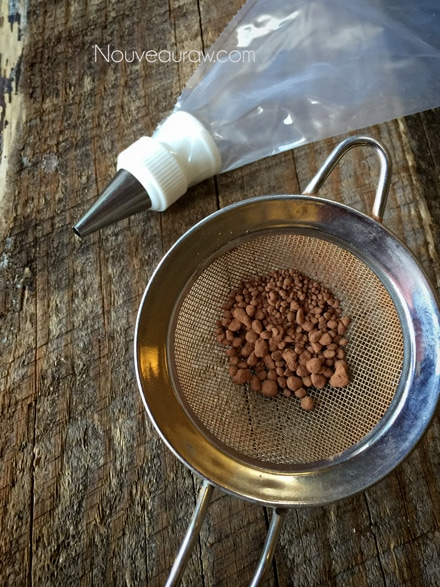
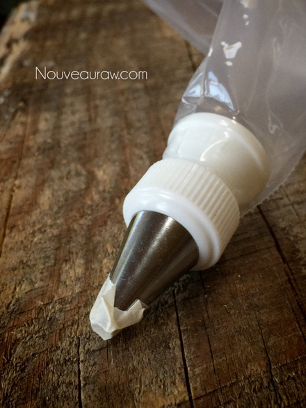
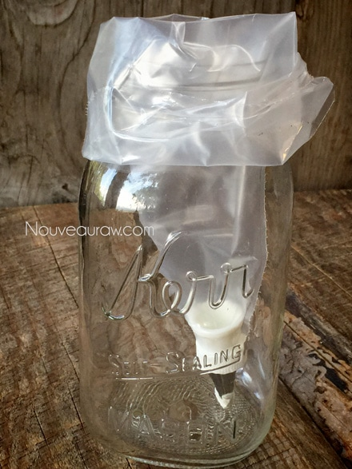
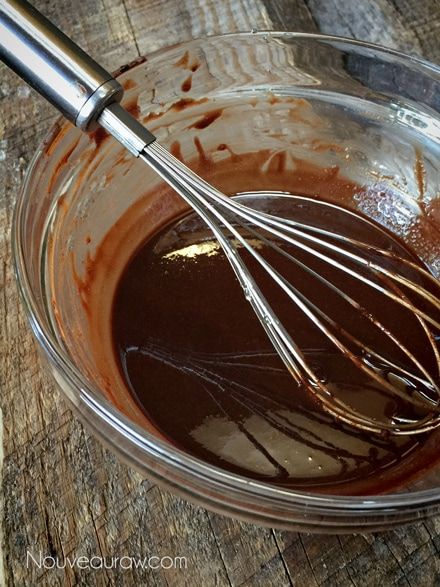
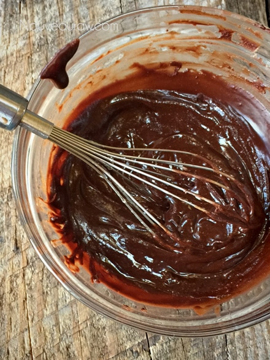
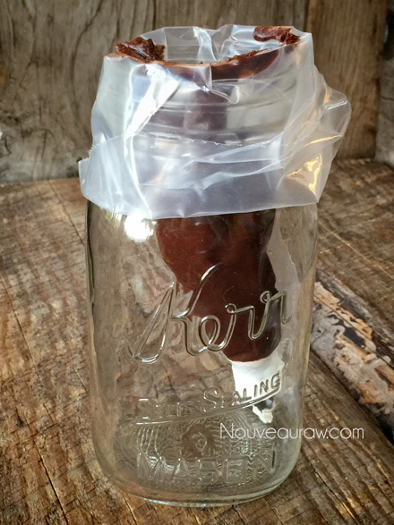
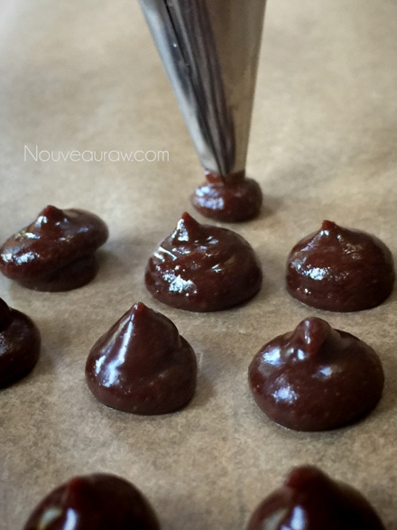
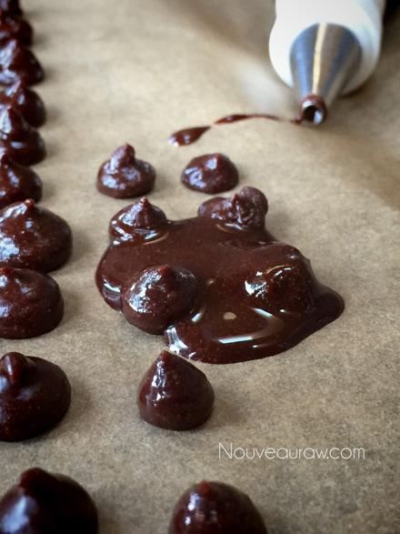
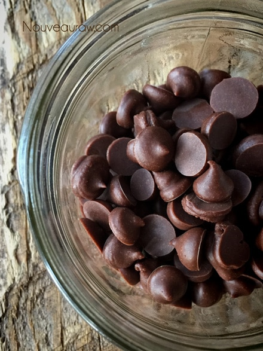
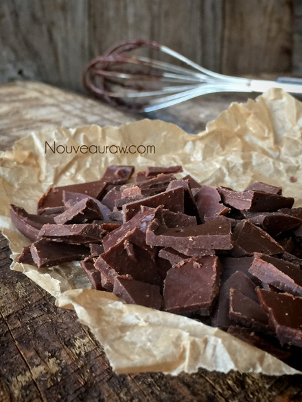

Chocolate Chips
~ raw, vegan, gluten-free ~
I have to just giggle and scratch my head whenever I look at the commercially made chocolate chips. I shop in the health food department at our local grocery store, and they have at least six different types of chocolate chips on the shelf.
One bag is gluten-free but has dairy, the bag next to it is dairy-free vegan but is soy-based, besides that bag is organic with dairy, and below that bag is fair-trade but contains cane sugar. Why can’t I find an organic, dairy-free, gluten-free, soy-free, that is made fair-trade… all rolled into one chip?!
Well, now I can… in the midst of my very own kitchen, and you too can make your own chocolate chips! Yes, you! With the simple task of making your own chocolate, the cost of a piping bag, and a tiny tip… well, you my friend can now spend countless minutes creating your own nuggets of chocolate bliss!
But wait there is more!! Not only can you make them…you can EAT them!! Oh but wait, there is even more…for free I will throw in antioxidant flavonoids, magnesium, sulfur, calcium, iron, zinc, copper, potassium, and manganese! Yes, you too can enjoy these wonderful health benefits for free! Respond today, and all this can be yours!
Ok, I am being fairly silly here. It’s all about enjoying life and really… look at this photo… don’t they just make you smile?
Piping your own chocolate chips is indeed a labor of love, but well worth it if you ask me. In reality, it really doesn’t take long once you start. My suggestion is to make a party out of it. Call over some friends, have some snacks, drinks, music… set each person up with a tray, piping equipment, and some raw chocolate. Pipe, giggle, share stories and have fun with it. If you have kids… rope them in… create memories. I have a feeling they will enjoy the process too. They may grow bored after the first ten but then that ten less that you have to do. hehe
Where there is a will, there is a way.
If you have no patience for making chocolate chips or perhaps time is the issue… no problem… Just pour the mixture into an 8×8 baking pan, and place in fridge or freezer until solid. Once done, flip the chocolate slab out onto a cutting board and chop to the desired size.
 Ingredients:
Ingredients:
Preparation:
Ensure all utensils, and the bowl is dry before the ingredients are added as water can cause the mix to separate.
- Line a cookie sheet with parchment paper or use your dehydrator tray that is lined with the non-stick teflex sheet.
- You will be piping your chocolate chips onto this. So whatever you use, make sure that it will fit into your freezer.
- Prepare the piping bag and tip.
- I used a disposable piping bag, snipping the pointed end so I can insert a tip. The size of the tip will determine the size of your chips.
- Place a piece of tape over the tip. This will prevent the chocolate from oozing out while filling the bag.
- Slide the piping bag inside of a tall jar, folding the bag open over the rim of the jar. Poke your fingers into the bag, making space for the chocolate that you will be pouring into it.
- Melt that raw cacao butter. Click (here) to read how.
- In the meantime, sift the cacao and mesquite powder together.
- It is important to work all the lumps out before adding the cacao butter.
- The unsifted powder will result in a lumpy/grainy chocolate.
- Once the cacao is melted completely, drizzle the cacao butter and maple syrup into the bowl with the powder until thoroughly combined.
- The chocolate will be liquid. Keep whisking until it JUST starts to thicken.
- Now pour the chocolate into the piping bag.
- Work out any air bubbles, twist closed, and get ready to pipe!
- To make the chocolate chips hold the tip straight down onto the non-stick sheet, squeeze a little bit out, pressing down, and then pulling up, taking the pressure off of the bag.
- Make sure you have allotted enough uninterrupted time to make all the chips at once, so your chocolate doesn’t get too thick in the piping bag.
- Once you are all finished, place your tray in the freezer for at least 10 minutes.
- Once frozen, scrape them off into a container that has an airtight lid and store in the freezer or fridge until you are ready to use them!
This is why it is important to sift the cacao and mesquite powder.
If these made their way into the bowl, the chocolate would be grainy.

Prepare the piping bag, put a piece of tape over the tip so the
chocolate doesn’t ooze out as you pour the chocolate in the bag.

Slide the bag into the jar and fold the edges over the jar.

With the supplies ready, now it’s time to keep an eye on the
chocolate. I am not sure if you can see it but this is still too thin
to use. Keep whisking it till it starts to thicken.

Can you see how it looks thicker? Now is the time to get it
into the piping bag. If it gets too thick, it won’t pipe so take note
that this is the “sweet post” and you can start piping!

Pour it into the bag, burp as air bubbles from the bag and have at it.

Hold the bag and tip straight up and down. With very gently
pressure, squeeze as you pull up.

Remember when I said “gentle” …. lol

Once you start, you really can’t stop. You don’t want to risk
the chocolate from cooling too much and make it hard to pipe.

Place in the freezer for 10 minutes, transfer to a jar and store in
the fridge or freezer until you are ready to use. Enjoy!

Oops, almost forgot, here a picture of chocolate “chips” were I
just poured the chocolate into a plate, froze it, and chopped it up.

Options: Add chocolate chips to your cookies such as in Chocolate Chip Cookies, Almond Hooters, Chocolate Chip Mint Ice Cream, and many other recipes! They make a great late night snack while everyone else is sleeping. Quietly tiptoe to the freezer, crack the door open slightly, so you don’t allow too much of the light to spill out, grab the container of chocolate chips and nibble away. Unlike M & Ms these will melt in your hand so make sure to lick your fingers clean to hide all the evidence. :)
© AmieSue.com